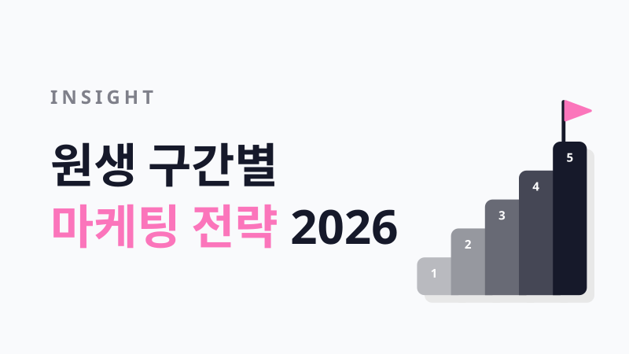

인사이트원생 구간별 마케팅 전략 2026
원생 1,000명 넘는 학원은 전국 학원과 교습소 중 상위 1.5%예요. 근데 몇 퍼센트냐보다 중요한 건, 지금 우리 학원이 있는 구간에서 무슨 마케팅을 하느냐예요. 원장님들이 블로그, 유튜브, 릴스 등에 직접 공유한 방법을 구간별로 나눈 알찬 정보을 한 곳에 보기좋게 정리했어요 🫡
우리 학원은 어느 구간일까요
| 구간 | 원생 수 | 전국 위치 | 이 구간의 숙제 한 줄 |
|---|---|---|---|
| 1 | 10~50명 | 상위 77~52% | 동네에서 "검색되는" 학원 되기 |
| 2 | 50~110명 | 상위 52~30% | 설명회와 학부모 리포트로 등록 흐름 만들기 |
| 3 | 110~300명 | 상위 30~10% | 신규생 받을 준비와 재원생 추천 |
| 4 | 300~1,000명 | 상위 10~1.5% | 학부모 소통을 시스템으로, 무대는 설명회와 맘카페 |
| 5 | 1,000명 이상 | 상위 1.5% | 브랜드로 모으고, 원장을 복제해 지점으로 |
전국 위치는 교육부 학원교습소정보(2026년 8월 31일) 기준, 운영 중인 학원과 교습소 138,568곳의 정원으로 계산했어요. 정원은 등록 최대 인원이라 실제 원생 수보다 클 수 있어요.
동네에서 검색되는 학원 되기
원장님 혼자 수업하고 상담하는 구간이에요. 광고비를 크게 쓰기보다 작게 여러 번 해 보고, 기록을 쌓는 게 답입니다.
1뿌리는 전단지 한 번보다 좁은 동네에 반복 노출하세요.
아파트 자석 전단과 수요일 전단지 배부로 9명에서 30~40명이 된 공부방 원장님도 있고, 지역 부동산 카페에 경력과 수업 방식, 정원을 적은 글 하나로 4년째 연락을 받는 원장님도 있어요. 넓게 한 번보다 좁게 여러 번이 낫습니다.
2개원 준비할 때부터 블로그에 기록하고, 글은 지우지 마세요.
매물을 보러 다니고 인테리어하는 과정부터 매주 올린 7평 교습소 원장님은 30명 목표를 일찍 채웠어요. 그 원장님이 가장 후회한 건 예전 글을 지운 것과 확장 뒤 블로그를 쉰 거예요. 학부모가 검색했을 때 보일 정보가 쌓여 있어야 합니다.
3광고보다 우리 학원 차별점 한 문장이 먼저예요.
대치동은 신문에 끼워 오는 전단의 90% 가까이가 학원이에요. 무엇이 강점인지 정리하지 않으면 그 속에 묻힙니다. 작은 학원이라면 1:1 밀착 관리가 가장 강한 무기예요. 풀이 과정까지 확인하고, 틀린 유형만 모아 문제를 만들어 주세요.
4첫 학생들의 변화가 다음 모집이에요.
원생 20~30명일 때 아이들을 남겨 숙제까지 봐준 게 입소문이 된 원장님, 대회 입상이 곧 홍보가 되어 7개월 만에 100명이 된 1인 코딩학원이 있어요. 지금 있는 아이들이 가장 좋은 광고판입니다.
5학교 앞 나눔을 한다면 물건보다 한마디와 재원생 이름을 챙기세요.
물건만 받은 아이는 학원 이름을 기억하지 못해요. 재원생 이름을 넣은 응원 문구를 함께 건네면 아이가 친구를 데려옵니다.
설명회와 학부모 리포트로 등록 흐름 만들기
강사님이 한두 분 생기고, 원장님 혼자 하던 일을 나누기 시작하는 구간이에요. 60명대와 100명 직전에 한 번씩 멈추기 쉽습니다.
1멈췄다 싶으면 신학기나 연말 설명회로 넘으세요.
3월과 9월에 회당 5명만 목표로 설명회를 열고, 재원생 학부모도 함께 초대해 보세요. 10~12월 설명회를 한 달 전부터 포스터, 블로그, 인스타, 아파트 광고 순으로 준비해 참석자 14명이 전원 등록한 원장님도 있어요. 설명회는 끝난 뒤 연락까지가 한 세트입니다.
2블로그는 주 1회 이상, 글감은 상담 때 받은 질문으로 채우세요.
"동 이름+학교급" 키워드를 하나씩 채워 첫해 70~80명, 이듬해 100명이 된 학원이 있어요. 질문, 답변, 이유, 제안 순서로 쓰고, 쓴 글 링크는 상담한 학부모에게 바로 보내세요.
3재원생 학부모에게 주간 피드백과 월간 보고서를 보내세요.
이 구간부터 월간 보고서는 기본이에요. 매주 보내는 짧은 피드백은 자동 발송으로 돌리면 원장님 시간이 덜 듭니다.
4원장님 시간을 수업에서 운영과 홍보로 옮기세요.
수업 매뉴얼, 업무 분장, 보고 체계를 이때 만들어 두지 않으면 100명 앞에서 원장님이 먼저 지쳐요.
5학원을 옮기는 시기인 방학과 시험기간에 특강을 걸어 두세요.
부담 없는 가격의 관리형 윈터스쿨로 1월과 2월 신규를 받은 90명대 학원이 있어요. 방학만 기다리지 말고, 숫자가 들어간 문구로 1년 내내 알리세요.
신규생 받을 준비와 재원생 추천
강사님이 여럿이고 반이 늘어나는 구간이에요. 문의는 오는데 받을 준비가 안 돼서 놓치는 일이 이때부터 생겨요.
1150명 안팎까지는 블로그가 여전히 주력이에요.
학교 앞 홍보 없이 블로그 하나로 1년 100명, 2년 200명이 된 원장님, 20명대에서 7년을 버티다 원장님 소개 글과 수업 Q&A를 공개하고 120명이 된 원장님이 있어요. "꼼꼼히 관리합니다" 대신 학생과 주고받은 문자, 성적표 캡처를 보여 주세요.
2신규생을 받을 준비부터 점검하세요.
학부모 10명이 한꺼번에 상담을 와도 누가 무엇을 할지 모두 알고 있나요? 정원이 찬 반과 빈 반 때문에 배정을 못 하고 있지는 않나요? 신규 상담이 어디서 왔고 왜 등록을 안 했는지 적고 있나요? 상담은 간단한 안내와 전문 상담으로 나눠 맡기세요.
3신규만큼 퇴원 방지가 마케팅이에요.
3~4월은 퇴원이 몰리는 시기라 그 전에 정기 상담을 잡으세요. 상담은 입학, 재원 중, 퇴원 세 시기로 나누고, 2~3월과 7~8월 진도 상담은 빠뜨리지 마세요.
4재원생 추천은 양쪽 모두에게 보상하세요.
추천한 아이와 새로 온 아이 모두 할인해 주고 한 달에 10명 안팎을 받은 180명 학원이 있어요. 보상은 신규생 등록 1개월 뒤에 주면, 금방 그만두는 경우를 거를 수 있습니다.
5강사 역량과 연간 계획을 시스템으로 묶으세요.
레벨테스트, 커리큘럼, 첨삭 기준을 문서로 남겨 두면 강사님이 바뀌어도 수업이 흔들리지 않아요. 1년 일정표도 이때 만들어 두세요.
학부모 소통을 시스템으로
원장님이 모든 학부모를 직접 챙기기 어려워지는 구간이에요. 무대가 블로그에서 설명회와 지역 맘카페로 옮겨 갑니다.
1재원생 학부모 소통을 사람이 아니라 시스템으로 돌리세요.
주간과 월간 결산 문자, 결석 당일 문자, 밴드와 반별 단톡을 정해진 리듬으로 운영하세요. 학생 관리 기록을 쌓고 그 기록으로 상담하면 퇴원이 줄어요.
2설명회와 지역 맘카페를 주 무대로 쓰세요.
약 500명 학원 원장님은 설명회 직후 맘카페 후기로 겨울방학 등록을 끌어냈어요. 유료 광고를 한다면 맘카페가 1순위이고, 학교 수행평가 정리 같은 정보글도 반응이 좋습니다.
3상담은 자랑 대신 진단과 결과물로 하세요.
상장, 말하기 영상, 첨삭 학습지를 보여 주고, 학원 자랑보다 질문과 경청으로 시작하세요.
4원장님 시간은 마케팅과 인재 채용에 쓰세요.
이 규모에서 원장님이 수업을 붙잡고 있으면 성장이 멈춰요.
5광고가 많아질수록 표현을 조심하세요.
"1위, 최고, 유일"처럼 입증하기 어려운 표현은 학원법상 벌점, 심하면 등록말소까지 갈 수 있어요. 합격 현수막은 동의 없는 개인정보 공개가 되지 않게 꼭 확인하세요.
브랜드로 모으고, 원장님을 대신할 사람을 키워요
여러 지점을 운영하거나 한 곳이 아주 큰 구간이에요.
1학년별, 지점별 정기 설명회를 주력으로 운영하세요.
설명회가 없는 기간에도 다음 설명회 알림 신청을 받아 명단을 쌓아 두세요. 여러 지점이 같은 주제로 온라인과 오프라인 설명회를 함께 열면 효율이 올라가요.
2새 지점은 그 동네에서 다시 무명이라고 생각하세요.
지점마다 블로그 담당을 두고, 교재와 콘텐츠는 모든 지점이 같은 것을 쓰세요.
3확장 전에 원장님을 대신할 사람부터 키우세요.
1호점 매출과 풀타임 강사 수를 먼저 확인하고, 태도 좋은 조교를 1~2년 키워 오른팔로 세우세요.
4수업 품질을 사람이 아니라 표준 커리큘럼에 담으세요.
강사님이 바뀌어도 같은 수업이 나와야 지점을 늘릴 수 있어요.
📌 10월 8일, 원생 1,000명 넘는 원장님들께 구간마다 무엇을 하셨는지 직접 여쭤보고 이 자료에 더해 드릴게요.
모든 구간에서 꼭 챙겨야 하는 마케팅 전략
1학부모는 결국 블로그, 인스타, 네이버 플레이스에서 한 번 더 확인해요.
상담이 끝나도 학부모는 온라인에서 우리 학원을 다시 찾아봅니다. 원장님 사진, 학원 이벤트 사진, 커리큘럼, 진도와 관리 시스템을 정확히 알 수 있는 자료로 꽉 채워 두세요.
2성적만으로는 입소문이 나지 않아요.
진도 상담, 결과 발표 행사, 성장 과정 캡처처럼 변화를 눈에 보이게 만들어야 소개가 생겨요.
3학습 리포트로 아이의 변화를 보여 주세요.
학부모가 학원을 믿고 계속 맡기는 건 성적표 한 장보다 꾸준히 쌓이는 기록 덕분이에요. 오늘 무엇을 배웠는지, 숙제는 했는지, 무엇이 달라졌는지를 주간 피드백과 월간 리포트로 보내 주세요. 기록이 쌓일수록 상담도 쉬워집니다.
4우리 학원만의 색다른 보상 시스템을 운영해요.
출석, 숙제, 친구 추천처럼 아이들이 꾸준히 해야 하는 것, 또는 해 줬으면 하는 것에 포인트나 장학금을 주세요. 보상이 있으면 아이들이 먼저 움직이고, 그 변화가 학부모에게도 보여요.
네 번째처럼 보상 장치를 쓰고 계신다면, 모은 포인트를 우리 학원만의 장학카드로 충전해 주는 방법도 있어요. 크래빗 장학카드는 학원에서 충전하고 아이가 직접 쓰는 선불카드로, 우리 학원만의 디자인을 담을 수 있어요. 전국 학원 1,350곳, 학생 9만 명이 쓰고 있습니다. 아래 링크로 상담 신청해 주시면 자세한 사용법과 크래빗 장학카드를 소개해 드릴게요.
무슨 근거를 기반으로 이 자료를 작성했냐고요?
- 크래빗팀의 지식과 인사이트만 담은 것이 아니라 - 국내 원장님들이 올리신 블로그, 브런치, 원장님 커뮤니티, 학원 매체 아티클, 유튜브, 인스타 릴스와 쇼츠를 직접 열어 확인하고 분석했어요. 더 다양한 학생 수 구간별로 효과적이였던 마케팅 전략을 최대한 모아서 정리했어요.
- 두 곳 이상에서 같은 이야기가 나온 것만 추려서 요약했어요. 업체가 쓴 광고성 글은 방법만 참고했고, 성과 수치나 자세한 내용은 옮기지 않았습니다.
원장님께 최대한 도움이 되도록 꼼꼼히 조사하고 분석해서 걸러낸 자료예요. 그래도 이대로 따라 하시기보다는, 이 링크나 내용을 복사해서 원장님을 제일 잘 아는 AI 툴에 내용을 복붙해 넣고 "우리 학원은 어떤 식으로 마케팅 전략을 구체화하면 좋을지" 더 깊이 대화해 보시는 걸 추천드려요!